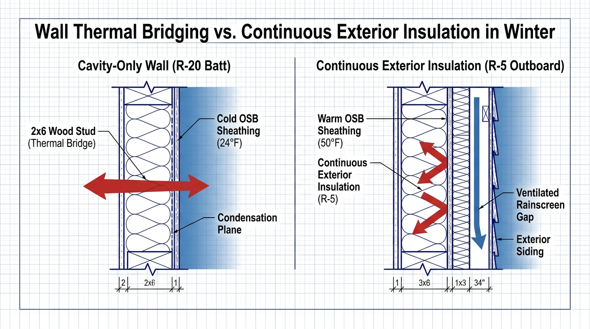

A wall cavity packed with R-20 fiberglass or rockwool batts rarely performs at R-20 in the field. Solid wood framing accounts for roughly 25% of an exterior wall's surface area, acting as a massive thermal highway that conducts indoor heat directly into the sub-zero winter air. Installing just 1.5 inches of continuous outboard insulation breaks this thermal bridge, elevates the temperature of exterior OSB sheathing above the indoor dew point, and permanently prevents hidden winter wall rot.
- The Framing Derate: Solid lumber framing (R-1.2 per inch) reduces the whole-wall effective performance of an R-20 cavity wall down to barely R-15.
- The Condensation Plane: In sub-zero January weather, structural OSB sheathing behind cavity-only insulation drops to 24°F, causing migrating indoor humidity to liquefy against wood fibers.
- Outboard Warming: Continuous outboard insulation keeps exterior sheathing above 45°F, satisfying IRC Table R702.7.1 condensation control mandates without risky interior poly vapor barriers.
- The Re-Siding Golden Window: Adding outboard stone wool or rigid foam during a siding replacement costs a fraction of a standalone retrofit while slashing heating demand by 18% to 24%.
The Prairie Cold Front at 14°F
It is 6:30 AM on a bitter January morning in a 1990s subdivision just west of Des Moines, Iowa. Outside, an open-prairie wind is scouring across snow-covered lawns, and the red bar stops at a punishing 14°F.
Inside, the family thermostat is set to 70°F, yet sitting near the western exterior wall feels like sitting next to a cold draft. Placing an infrared thermometer against the drywall reveals dark vertical stripes every 16 inches: the wall surface measures 68°F over the insulation cavities, but plummets to 59°F directly over every single wood stud.
The homeowner assumed their 2x6 walls with R-20 fiberglass batts provided an unbroken blanket of warmth. In reality, nearly one-quarter of the wall is uninsulated wood conducting expensive heat directly into the sub-zero Iowa wind.
The Framing Factor: Why R-20 Cavity Batts Don't Equal an R-20 Wall
Most building codes and contractor estimates rate exterior walls based on the insulation stuffed between the framing studs. If you install an R-20 batt inside a 2x6 wall, the assumption is that your house is protected by an R-20 thermal boundary.
Thermodynamic testing compiled by Oak Ridge National Laboratory (ORNL) proves this calculation is fundamentally flawed. In standard platform framing, solid lumber accounts for approximately 23% to 27% of a wall's total surface area when you factor in double top plates, bottom mud sills, king studs, jack studs, cripples, and corner assemblies.
Softwood lumber has an insulating value of barely R-1.2 to R-1.25 per inch of thickness. That means a solid 2x6 wood stud (5.5 inches deep) provides an insulating value of only R-6.88.
Every 16 inches along your wall, you have a solid wood highway connecting 70°F interior drywall directly to 0°F exterior sheathing. This thermal bridging derates your entire wall assembly, dragging a nominal R-20 cavity wall down to an effective whole-wall rating of barely R-14.8 to R-15.4.
Dew Point Physics: Why Outboard Insulation Prevents Rot
The most dangerous consequence of cavity-only insulation in Midwest winters is not heat loss—it is structural moisture condensation.
Indoor winter air at 70°F and 35% relative humidity carries a dew point of approximately 41°F. When indoor humidity naturally migrates through drywall, electrical outlets, and framing joints, it travels outward toward the cold exterior sheathing.

In a wall with insulation only inside the stud cavity, the exterior OSB or plywood sheathing is thermally isolated from interior heat. On a 14°F January night in Des Moines, the temperature on the inside face of that exterior OSB drops to 22°F to 26°F.
When 41°F dew-point moisture hits 24°F wood, it condenses immediately into liquid water and winter frost. Trapped behind building wrap, this moisture cycles through spring freeze-thaw events, rotting framing sills and feeding hidden fungal mold.
Adding continuous outboard insulation (CI) solves this physics equation permanently. By placing R-5 to R-10 of continuous insulation on the outside of the structural sheathing, the OSB is warmed by interior heat and maintained at 48°F to 54°F.
Because the wood sheathing never drops below the 41°F dew point, moisture vapor cannot condense. It passes harmlessly through the assembly as a gas, protecting your structure under IRC Section R702.7.1.
Material Teardown: Choosing the Right Outboard Layer
Selecting continuous exterior insulation requires balancing thermal resistance, vapor permeability, and freeze-thaw moisture durability.
| Insulation Material | Rated R-Value per Inch | Vapor Permeance | Freeze-Thaw Behavior | Best Use Case |
|---|---|---|---|---|
| Mineral Wool (Rockwool Comfortboard 80) | R-4.2 | > 30 Perms (Vapor Open) | Hydrophobic; drains bulk water; zero freeze degradation | Top Choice: Drying to exterior; fireproof; insect resistant |
| Expanded Polystyrene (EPS - Type II) | R-4.0 | 2.0 – 4.0 Perms (Semi-Open) | Breathable matrix; moderate water absorption | Budget Choice: Breathable, affordable under vinyl siding |
| Extruded Polystyrene (XPS) | R-5.0 | 0.8 – 1.1 Perms (Semi-Closed) | Low water absorption; retains moisture if vapor trapped | Acceptable under cladding; avoid double vapor barriers |
| Foil-Faced Polyisocyanurate (Polyiso) | R-6.0 | < 0.05 Perms (Vapor Impermeable) | Superior summer performance; derates below 25°F | Excellent for maximum R-value in slim wall profiles |
Sources: Building Science Corporation Research Reports; ASTM C518 Thermal Transmission Testing.
Mineral wool board (such as Rockwool Comfortboard 80) is the premier specification for Climate Zones 4 and 5. Because stone wool is completely vapor-permeable (> 30 perms), it allows damp wall assemblies to dry outward rapidly while providing a continuous thermal break.
Foil-faced polyisocyanurate provides the highest R-value per inch (R-6.0), but property owners should note its cold-temperature behavior. Research from the Building Science Corporation proved that standard polyiso blowing agents condense at sub-freezing temperatures, derating its real-world performance to roughly R-4.5 per inch when exterior temperatures drop below 15°F.
The Re-Siding Golden Window
Attempting to add continuous exterior insulation to an existing home as a standalone project is rarely cost-effective because of siding removal and re-installation costs.
The ideal time to install outboard insulation is during a planned siding replacement. Once old aluminum, vinyl, or wood siding is stripped down to bare sheathing, the incremental cost of adding continuous insulation is limited strictly to materials, longer fasteners, and window extension jambs.
For an average 2,200-square-foot exterior wall area, adding 1.5 inches of rigid stone wool or high-density EPS adds approximately $1.80 to $2.60 per square foot in installed cost.
When factored into a $14,000 to $22,000 re-siding project, an additional $4,500 investment in continuous insulation reduces whole-building heating and cooling loads by 18% to 25% permanently. Unlike replacement windows, which carry a 30-year payback, outboard insulation installed during re-siding typically recoups its cost in 6 to 8 winters.
Mechanical Fastening & Rainscreen Specification
Installing cladding over 1.5 to 2 inches of exterior insulation requires strict adherence to structural fastening details compliant with IRC Section R703.15.
The Outboard Wall Layer Sequence (Inside to Outside):
1. Interior Framing: 2x4 or 2x6 studs with friction-fit cavity batts.
2. Structural Substrate: 1/2-inch OSB or plywood sheathing.
3. Taped WRB: Vapor-permeable weather-resistive barrier (ASTM E2556).
4. Continuous Insulation: 1.5-inch rigid stone wool or polyiso board (R-6 to R-10).
5. 3/4-Inch Ventilated Rainscreen Gap: 1x4 vertical treated furring strips aligned with studs.
6. Exterior Cladding: Fiber cement, engineered wood, or vinyl siding.
How to Keep Siding Contractors Honest
Most traditional siding crews have never installed cladding over continuous exterior insulation and will attempt to cut critical corners:
First, reject any proposal to nail vinyl siding directly through 2 inches of foam without vertical furring strips. Direct nailing crushes the insulation, creates wavy, buckled siding lines, and eliminates the essential 3/4-inch rainscreen drying gap.
Second, require written contract verification that window and door openings will receive structural extension bucks and sloped pan flashing compliant with ASTM E2112. If a crew simply runs foam up to old window frames without extending the casing and flashing, water runoff will enter the rough framing.
Third, confirm that the contractor leaves a 3/8-inch screened ventilation gap at the bottom and top of all furring runs. This chimney gap allows bulk water to drain and convective airflow to dry the back of your siding year-round.
Verifiable Standards & Technical Sources
- ASTM C518: Standard Test Method for Steady-State Thermal Transmission Properties by Means of the Heat Flow Meter Apparatus.
- ASTM E96: Standard Test Methods for Gravimetric Water Vapor Transmission of Materials.
- ASTM E2112: Standard Practice for Installation of Exterior Windows, Doors and Skylights.
- ASTM E2556: Standard Specification for Vapor Permeable Flexible Sheet Water-Resistive Barriers.
Related Building Science Guides
- Winter Utility Tariffs & Thermal Chimneys: → Read: Winter Tariff Hikes: Why $20k on Windows Doesn't Hold Up
- Wall Cavity Insulation Comparison: → Read: Rockwool vs. Fiberglass in Midwest Walls: The 5 Physical Differences That Matter
- Interior Vapor Control in Cold Climates: → Read: Smart Vapor Retarders: How Variable-Permeance Membranes Function in Climate Zone 5